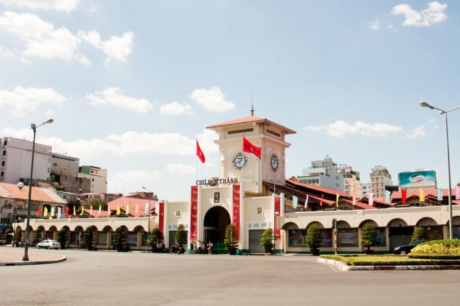

Nhà hát thành phố
Nhà hát Thành phố Hồ Chí Minh (thường được gọi ngắn gọn là Nhà hát Thành phố hoặc Nhà hát Lớn)
là một nhà hát có mặt tiền hướng ra Công trường Lam Sơn và đường Đồng Khởi, Quận 1, Thành phố Hồ Chí Minh.
Nằm ở một vị trí thuận lợi tại trung tâm thành phố, nhà hát được xem là nhà hát trung tâm,
đa năng chuyên tổ chức biểu diễn sân khấu nghệ thuật đồng thời cũng được sử dụng để tổ chức một số sự kiện lớn.
Đây cũng là nhà hát thuộc loại lâu đời theo kiến trúc Tây Âu và được xem như một địa điểm tham quan của thành phố này.
Sau khi chiếm được Nam Kỳ, năm 1863, chính quyền Pháp đã mời một đoàn hát sang biểu diễn tại Sài Gòn để giải trí cho lính
viễn chinh Pháp. Lúc đầu, đoàn biểu diễn tạm tại nhà gỗ của dinh Thủy sư đề đốc tại Công trường Đồng Hồ (Place de l'Horloge)
(góc Nguyễn Du - Đồng Khởi hiện nay). Sau đó, một nhà hát tạm được lập ở vị trí Khách sạn Caravelle ngày nay. Năm 1898, Nhà hát
lớn được khởi công ngay cạnh nhà hát cũ và đến ngày 1 tháng 1 năm 1900 thì khánh thành.
Giữa hai cuộc Chiến tranh thế giới thứ nhất và Chiến tranh thế giới thứ hai, việc đem gánh hát từ Pháp sang đây biểu diễn hoàn toàn do sự trợ cấp
của chính quyền thành phố. Tuy có dự định nơi đây sẽ trở thành một khu trung tâm giải trí dành riêng cho những nhân vật sang trọng, nhưng Nhà hát
Tây càng ngày càng mất khách, vì các tay ăn chơi bị các hộp đêm, các quán ăn có nhạc và khiêu vũ giúp vui thu hút hầu hết... Sau thời gian đầu hoạt
động sôi nổi, nhà hát chỉ còn sinh hoạt cầm chừng với các buổi ca hát, hòa nhạc và cải lương. Do có nhiều chỉ trích về kiến trúc rườm rà và chi phí
tổ chức tốn kém, nên chính quyền thành phố đã từng có ý định chuyển nhà hát thành nơi hòa nhạc (Salle de Concert). Tuy nhiên, ý định này đã không được thực hiện.
Thay vào đó, năm 1943 phần trang trí, điêu khắc ở mặt tiền nhà hát bị xóa bỏ (tượng nữ thần nghệ thuật, các dây hoa, hai cây đèn...) nhằm trẻ trung hóa phong cách kiến trúc.
Tuy nhiên, vào năm 1944, nhà hát bị phi cơ Đồng Minh oanh tạc, làm hư hại hại nặng, phải ngưng hoạt động.

bảo tàng chứng tích chiến tranh
Bảo tàng Chứng tích Chiến tranh (War Remnants Museum) là một bảo tàng vì hòa bình ở số 28 đường Võ Văn Tần, Phường Võ Thị Sáu, Quận 3, Thành phố Hồ Chí Minh.
Bảo tàng Chứng tích Chiến tranh trực thuộc Sở Văn hóa và Thể thao Thành phố Hồ Chí Minh, là thành viên của hệ thống Bảo tàng vì hòa bình thế giới và Hội đồng
các bảo tàng thế giới (ICOM). Bảo tàng Chứng tích Chiến tranh là Bảo tàng chuyên đề nghiên cứu, sưu tầm, lưu trữ, bảo quản và trưng bày những tư liệu, hình ảnh,
hiện vật về những chứng tích tội ác và hậu quả của các cuộc chiến tranh mà các thế lực xâm lược đã gây ra đối với Việt Nam. Qua đó, Bảo tàng tuyên truyền về tinh thần
đấu tranh bảo vệ độc lập tự do của Tổ quốc, về ý thức chống chiến tranh xâm lược, bảo vệ hòa bình và tinh thần đoàn kết hữu nghị giữa các dân tộc trên thế giới.
Bảo tàng lưu giữ hơn 20.000 tài liệu, hiện vật và phim ảnh, trong đó hơn 1.500 tài liệu, hiện vật, phim ảnh đã được đưa vào giới thiệu ở 8 chuyên đề trưng bày thường xuyên.
Từ nhiều năm qua, Bảo tàng Chứng tích Chiến tranh là một trong những điểm tham quan thu hút lượng khách đông nhất ở TPHCM và cả nước[1]. Qua 45 năm hình thành và phát triển (1975 - 2020),
Bảo tàng đã đón tiếp hơn 23 triệu lượt khách tham quan, trong đó có hơn 11 triệu lượt khách quốc tế và hơn 2 triệu lượt khách tham quan triển lãm lưu động. Hiện nay Bảo tàng Chứng tích Chiến tranh thu hút trên 1 triệu lượt khách tham quan mỗi năm[2].

Chợ bến thành
Chợ Bến Thành thời kỳ đầu được xây bằng gạch, sườn gỗ, lợp tranh, được mô tả như là "phố chợ nhà cửa trù mật" ở dọc theo bến sông. Chỗ đầu bến này có lệ đến đầu mùa xuân gặp ngày tế mạ, có thao diễn thủy binh, nơi bến có đò ngang chở khách buôn ngoài biển lên. Đầu phố phía Bắc là ngòi Sa ngư, có gác cầu ván ngang qua, hai bên nách cầu có dãy phố ngói, tụ tập trăm thứ hàng hóa, dọc bến sông ghe buôn lớn nhỏ đến đậu nối liền"[1]. Tuy nhiên, sau cuộc nổi loạn của Lê Văn Khôi (1833-1835), thành Quy bị triệt hạ, phố chợ Bến Thành cũng không còn sầm uất như trước.
Trước khi Pháp đánh chiếm Gia Định, khu vực xung quanh thành Gia Định (bấy giờ là thành Phụng) mới chỉ có 100 ngàn dân và chợ Bến Thành là nơi đông đúc nhất. Cạnh khu chợ, dọc theo bờ sông Bến Nghé, các ghe thương thuyền thường đậu chen chúc nhau, tạo thành một thành phố nổi trên mặt nước. Tuy nhiên, khi ấy khu họp chợ trên bến mới chỉ là một dãy nhà trống lợp ngói. Vào tháng 2 năm 1859, Pháp chiếm thành Gia Định và hai ngày sau, các binh lính người Việt đã tổ chức hỏa công thiêu rụi cả thành phố, tất nhiên chợ Bến Thành cũng bị thiêu hủy. Sau khi đã vững chân trên mảnh đất Nam Kỳ, năm 1860, người Pháp đã cho xây cất lại chợ Bến Thành ở địa điểm cũ (thời Việt Nam Cộng hòa là địa điểm Tổng Ngân khố, nay là Trường đào tạo cán bộ ngân hàng trên đường Nguyễn Huệ). Ngôi chợ được xây cất bằng cột gạch, sườn gỗ, và lợp lá.
